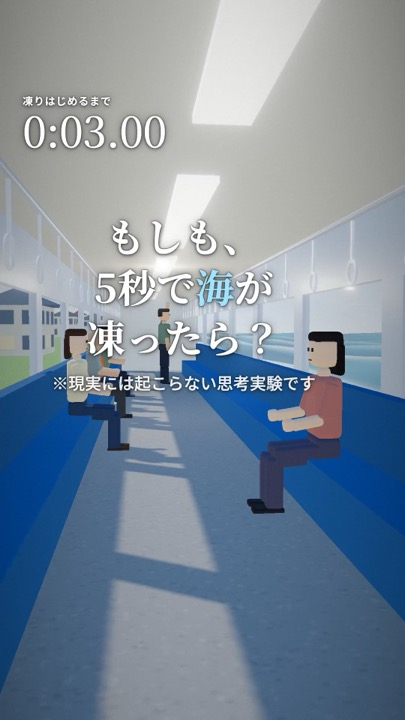
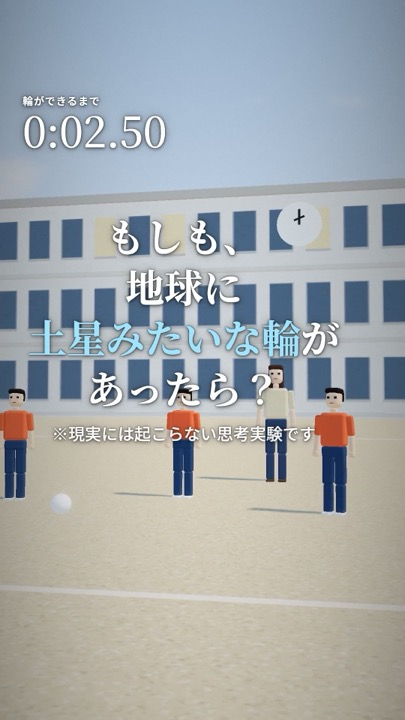

消える系
もしも、5秒間だけ空気が消えたら？
音も、風も、浮力も消えた5秒間。
本サイトは講義課題として制作したものです。（実在しない仮想企業です）
すべて自社で企画・計算・3D制作した動画です。
縦型（1080×1920）・60秒前後。冒頭に題名とカウントダウン、最後は日常に戻って終わります。
音も、風も、浮力も消えた5秒間。

台所のお茶わんから街の車まで。

空にある水の量を実際に計算。

電柱、ビル、山、そして雲の上へ。

港の波が一瞬で止まる。

日本の夜空はどう見える？
あたりまえにあるもの（空気・重力）が一瞬なくなり、その大切さに気づく型。
1回ごとに2倍。電柱→ビル→山と、たとえがどんどん大きくなる型。
台所の小さなおかしな出来事が、最後は地球規模の景色につながる型。